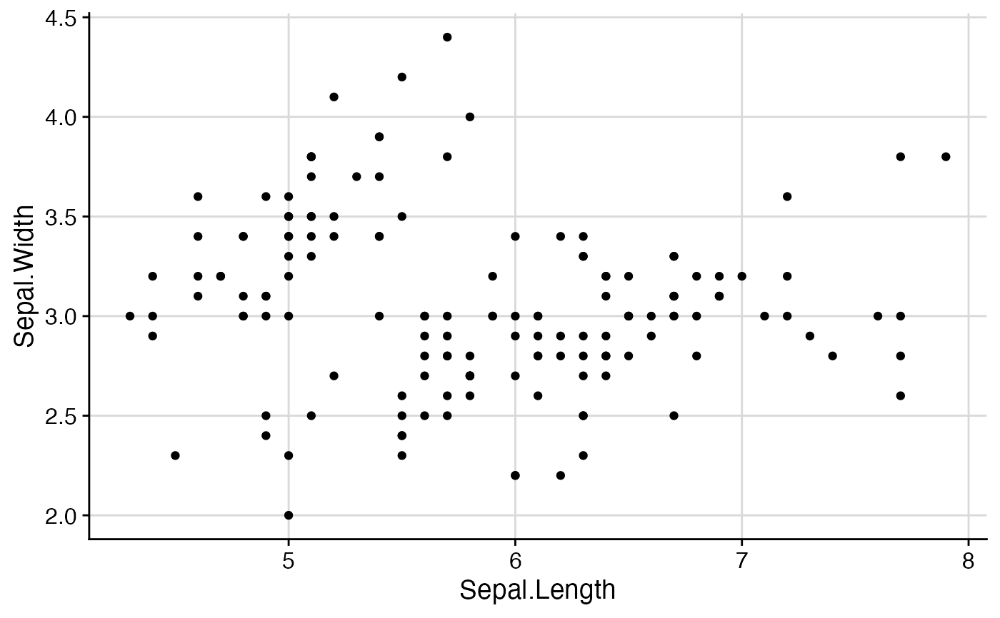

background_grid.RdThis function provides a simple way to set the background grid in ggplot2. It
doesn't do anything that can't be done just the same with theme(). However, it simplifies
creation of the most commonly needed variations.
background_grid(major = c("xy", "x", "y", "only_minor", "none"), minor = c("none", "xy", "x", "y"), size.major = 0.5, size.minor = 0.2, color.major = "grey85", color.minor = "grey85", colour.major, colour.minor)
| major | Specifies along which axes you would like to plot major grid lines. Options are "xy", "x", "y", "none". |
|---|---|
| minor | Specifies along which axes you would like to plot minor grid lines. Options are "xy", "x", "y", "none". |
| size.major | Size of the major grid lines. |
| size.minor | Size of the minor grid lines. |
| color.major, colour.major | Color of the major grid lines. |
| color.minor, colour.minor | Color of the minor grid lines. |
Note: This function completely overwrites all background grid settings of the current theme. If that
is not what you want, you may be better off using theme() directly.
library(ggplot2) ggplot(iris, aes(Sepal.Length, Sepal.Width)) + geom_point() + theme_half_open() + background_grid()